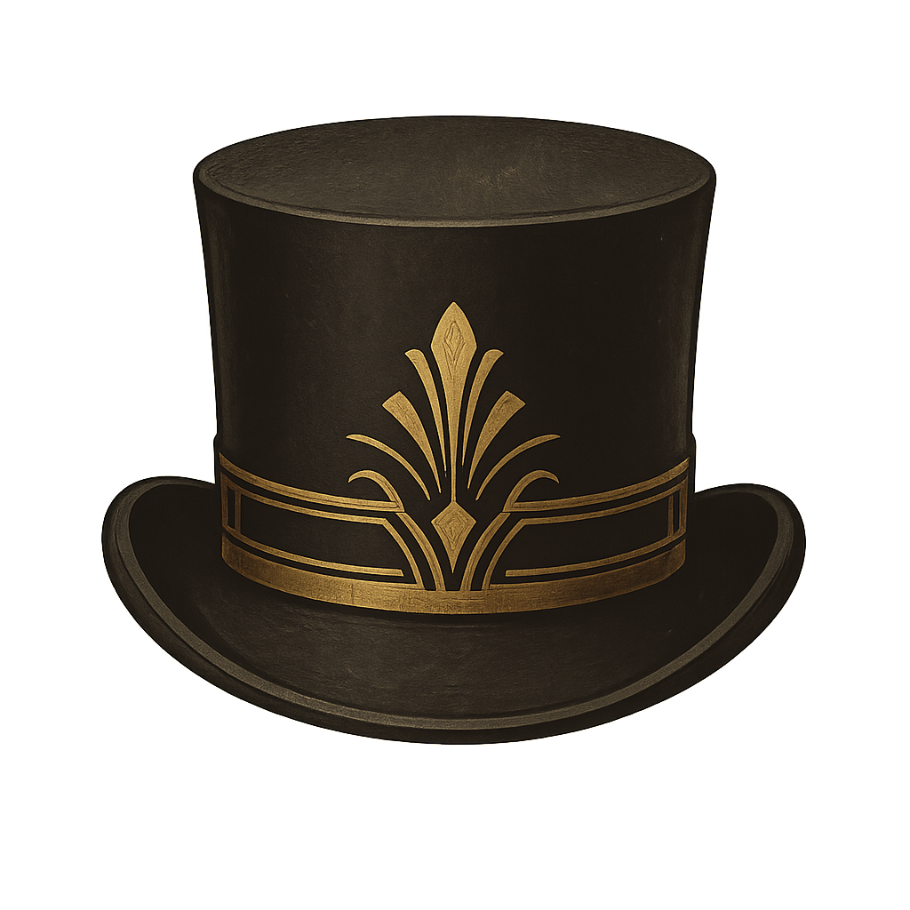
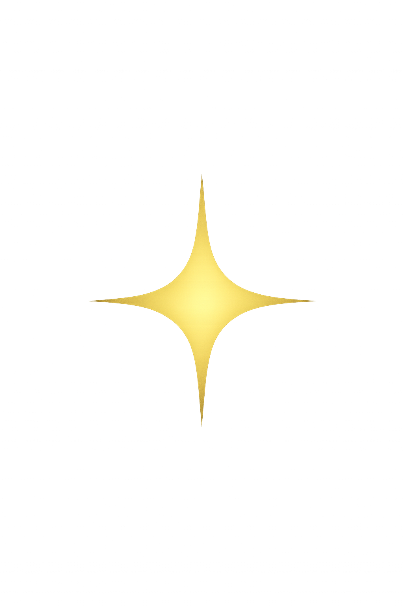
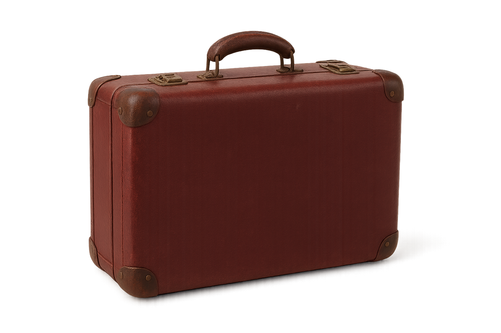

Saurez-vous retrouver les indices et trouver le thème du gala ?
Attention, il ne vous reste plus beaucoup de temps...
« Bienvenue, voyageur du temps…
Ici, les époques se mêlent, les aiguilles hésitent, et les objets retiennent un éclat presque… excessif.
Trois artefacts vibrent d’une singulière promesse. Approchez, mais avec prudence : certains secrets n’attendent que d'être effleurés pour se révéler. »
Ici, les époques se mêlent, les aiguilles hésitent, et les objets retiennent un éclat presque… excessif.
Trois artefacts vibrent d’une singulière promesse. Approchez, mais avec prudence : certains secrets n’attendent que d'être effleurés pour se révéler. »



